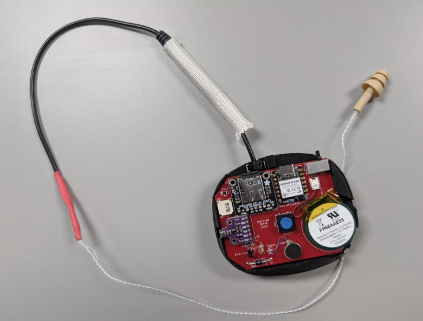
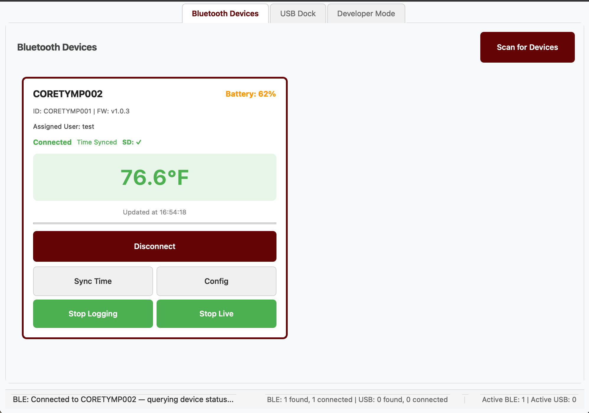
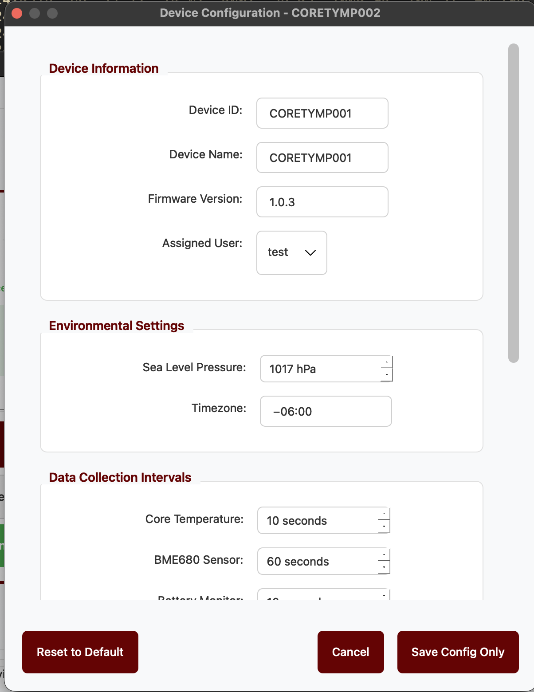
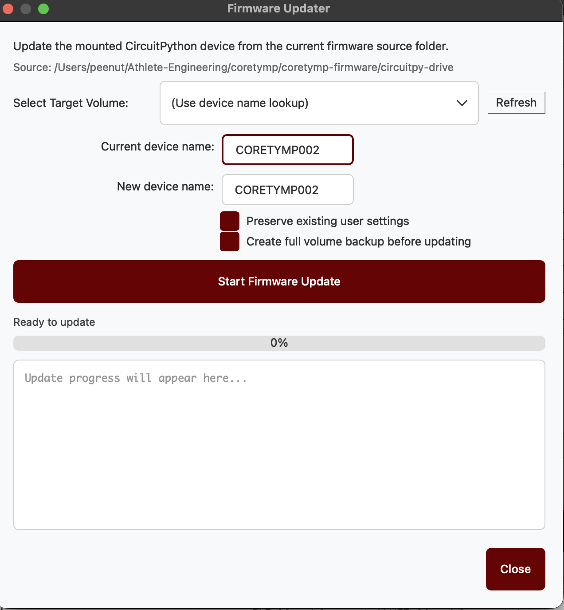

$ cat ~/projects/coretymp/README.md
CoreTymp

CoreTymp is an ear-based wearable prototype for continuous temperature and environmental monitoring in demanding work environments. I owned the software and firmware work end to end, and I also contributed to the hardware design process through system-level decisions and implementation guidance.
Technical Overview
- CircuitPython firmware for reliable sensor management
- Collaborative hardware design and integration
- BME680 sensor for multi-parameter environmental data
- Bluetooth Low Energy (BLE) for wireless configuration and monitoring
- USB-C UART protocol for fast, secure data transfer
- Python-based GUI for real-time device control and data access
- Efficient minute-level logging for long-duration shifts
Contributions
- Built and iterated 10+ ESP32-based ear-worn prototypes for heat-safety monitoring, moving from breadboard builds to custom EasyEDA PCBs and shrinking the device footprint by 40%.
- Developed CircuitPython firmware with multi-sensor interfaces (BME680, thermistor, SD), BLE GATT streaming, custom UART framing and checksums, and OTA updates.
- Integrated BLE and USB workflows for real-time monitoring, data transfer, and device configuration across distributed multi-device setups.
- Built a full PyQt6 desktop application for multi-device control, used across 20+ lab test sessions.
- Drove three hardware revisions in collaboration with the team to reach a compact, field-ready wearable.
Desktop GUI (PyQt6)
Alongside the firmware, I built a full desktop application in PyQt6 to manage the entire device ecosystem from a single interface. The goal was to give researchers a way to run multi-device sessions without touching the hardware or manually handling files.
Features
- Simultaneous BLE connections: connect to multiple CoreTymp devices at once, with per-device real-time data streams and status monitoring in a single view
- OTA firmware updates: push new firmware to one or all connected devices from the GUI without physically reflashing each unit
- Per-device configuration: adjust sampling rate, alert thresholds, and logging behavior on individual devices without affecting others in the session
- User assignment: assign a named user profile to each device before a session, so data files are automatically labeled and organized on download
- USB-C dock integration: when devices are docked, the app detects them over USB and automatically pulls logged data files and queues them for charging, no manual file management needed
GUI Screenshots



Project Ownership
- Software and firmware were handled by me
- Hardware was developed with a teammate, with my input on system decisions
- Copyright © 2024 by Athlete Engineering, Mississippi State University